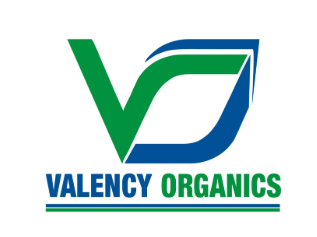

Explore my diverse work experience where I have harnessed cutting-edge technologies and analytical techniques to drive innovation and efficiency. My career has been marked by a commitment to delivering impactful solutions and advancing technological frontiers across various domains.
Chalk Digital
Data Scientist
(September 2024 - Present)
San Diego, CA, USA (Remote)
- Designed and implemented machine learning prediction models for fraud detection and risk analysis, processing 150K requests per millisecond, optimizing real-time bidding processes to be more efficient and faster for advertising platform.
- Leveraged Hadoop for big data processing to manage and process 12 billion requests daily, utilizing cloud platforms (AWS and GCP) for data retrieval, preventing fraudulent ads in real-time, improving business efficiency and risk measures by 15%.
- Employed Kafka for real-time monitoring and Tableau for performance visualization for decision-making and system optimization.
- Skills: Python Programming, SQL, Tableau, AWS, Big Data, Real-Time Bidding Optimization, Fraud Detection
Schneider Electric
Quality Data Analytics Co-op
(September 2023 - January 2024)
Middletown, PA, USA (Onsite)
- Developed and executed data-driven solutions using Python, SQL, Macros on cloud-based solutions (Databricks & Salesforce) to have rigid data pipeline for Supply Chain Quality team.
- Collaborated in continuous improvement initiatives, enhancing process efficiency and product quality; worked on PFMEA activities, create PRBs, and improve timely process.
- Utilized Tableau to create dashboards, reports and set subscriptions for business leaders, providing daily insights.
- Established measurable KPIs, reducing customer complaints by 40% and reducing CR response time by 4 hours by streamlining SAP order processes.
- Skills: Python Programming, SQL, Tableau, Databricks, Macros, Salesforce, Microsoft Office, PFMEA
Northeastern University
Machine Learning Teaching Assistant
(January 2024 - July 2024)
Boston, MA, USA (Onsite)
- Conducted sessions for 150+ students in building Statistical models (Regression and Classification) from scratch, underlying the fundamentals of model development, and emphasizing core Machine Learning principles.
- Facilitated Python labs for students to enhance programming skills for statistical modeling without native libraries.
- Assisted satudents to develop and deploy machine learning algorithms to analyze large datasets, resulting in actionable insights and improved decision-making processes.
- Skills: Machine Learning, Statistical Modeling, Python Programming, Jupyter Notebooks, Large Datasets, Curriculum Development
Valency Organics

Data Analyst
(January 2022 - June 2022)
Gurugram, Haryana, India (Hybrid)
- Engineered and optimized data pipelines using MySQL for comprehensive ETL/ELT processes, significantly enhancing data accessibility and automating order sales processes, resulting in streamlined operations and reduced latenc.
- Designed and developed sophisticated dashboards in Tableau, enabling the extraction of actionable financial insights, trend analysis, and accurate sales forecasting, thereby supporting strategic business decisions.
- Implemented advanced ad-hoc analytics methodologies, achieving a 45% increase in business process efficiency by identifying key performance areas and deploying targeted optimization strategies.
- Skills: Data Analysis, SQL, Tableau, ETL/ELT, Excel, Ad-hoc Analytics, Forecasting, Price Analysis
Graphic Era University
Data Science Research Assistant
(September 2020 - December 2021)
Dehradun, Uttarakhand, India (Onsite)
- Enhanced Python scripts for Image Processing (Classification) in healthcare to identify real-time 10,000 COVID cases.
- Designed a self-Neural Network and compared the performance with other Deep learning models achieving 85.86% accuracy.
- Implemented a machine learning pipeline for data preprocessing, model training, and evaluation, significantly reducing the time required to develop and test new models.
- Skills: Machine Learning, Deep Learning, Python Programming, Jupyter Notebooks, Data Processing